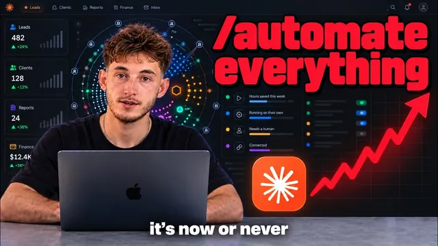

진짜예요, AIOS 한번 깔면 사업이 뒤집힙니다

원본 영상 보기 →
- AI 도입은 툴이 아니라 숫자에서 시작해요
- 가장 귀찮은 일과 가장 돈이 되는 일은 다릅니다
- 실패는 기술보다 합의와 사람에서 나옵니다
한 줄 요약
3년간 약 100개 기업에 AI 시스템을 깔아 본 Nick Puru 팀이, 도구가 아니라 숫자에서 출발하는 AI 운영체제(AIOS) 도입 6단계를 공개했어요. 레버리지 찾기, 정직한 계산, 리더십 합의, 업무 감사, 작게 만들기, 팀 정착 순입니다. 실제 고객사 수치를 그대로 보여주는데, 목표에 못 미친 수치까지 숨기지 않았어요.
전체 내용 정리
ChatGPT를 써봐도 회사 운영은 그대로였어요
부동산 관리, 채용, 회계 법인, 에이전시, 클리닉, 홈 서비스까지 업종도 규모도 다른 약 100개 기업에 들어가 봤습니다. 그런데 상황이 다 비슷했어요.
연 매출 180만 달러 채용 회사든, 12명짜리 부동산 관리 업체든, 고객사 80곳을 둔 광고 대행사든 마찬가지였습니다. 창업자 정도가 이메일 쓰거나 아이디어 낼 때 ChatGPT를 써봤을 뿐, 일상 운영은 바뀌지 않았어요.
- 고객 보고서는 여전히 매주 손으로 만들고 있었고요
- 리드는 회신까지 몇 시간씩 기다렸습니다
- 한 채용 회사의 리크루터 6명은 각자 매주 13시간씩 행정 업무에 쓰고 있었어요. 사실상 정규직 두 명이 행정만 하고 있던 셈이죠.
AI를 시도한 곳도 툴을 사서 소프트웨어 비용만 늘었을 뿐, 6개월이 지나도 어떤 수치가 좋아졌는지 아무도 말하지 못했습니다.
Nick 팀이 'AI 네이티브화'라고 부르는 방식은 출발점이 달라요. 툴이 아니라, 운영자들이 개선할 단 하나의 수치에 합의하고 성공 기준을 미리 적어 두는 것에서 시작합니다. 그다음 시간과 돈이 어디로 가는지 감사하고, Outlook·Gmail·CRM·문서·스프레드시트를 한곳에 연결해 AI가 비즈니스 전체를 이해하게 만들죠.
그러면 팀원 모두가 회사 데이터를 쓰는 AI 비서와 대시보드, 고객 포털을 갖게 되고, 팔로업과 고객 응대, 보고가 스스로 돌아갑니다. 이게 AI 운영체제예요.
경영자가 신경 써야 하는 이유가 있어요. 보통 매출이 늘면 사람을 뽑고, 그 사람을 교육하고 관리하느라 늘어난 마진이 급여로 사라집니다. AIOS는 업무량이 늘어도 인건비가 비례해서 오르지 않게 하는 첫 실질적인 방법이에요.
1단계: 가장 귀찮은 일이 아니라 돈이 되는 곳을 찾으세요
약 400세대를 관리하는 직원 12명, 연 매출 280만 달러쯤 되는 부동산 관리 회사가 있었어요. 오너는 매일 같은 질문을 쏟아내는 세입자 메시지를 없애고 싶어 했습니다.
그런데 운영을 들여다보니 진짜 문제는 다른 데 있었어요. 잠재 고객이 6개 경로로 들어와 6곳에 흩어지고, 응답까지 3~4시간이 걸려서 리드의 약 30%를 놓치고 있었습니다. 돈 들여 데려온 리드 세 명 중 한 명을 그냥 날리고 있던 거죠.
세입자 메시지는 성가신 일일 뿐이었고, 돈이 되는 레버리지는 리드 응대였습니다.
레버리지는 세 종류예요.
- 용량 — 사람을 더 뽑지 않고는 일을 더 받을 수 없는 상태. 고객 80곳으로 꽉 찬 광고 대행사가 여기죠.
- 누수 — 이미 낸 돈이 새는 곳. 늦은 후속 조치, 놓친 갱신. 위 부동산 관리 회사가 그랬어요.
- 비용 — 시급 500달러짜리 일을 해야 할 최고 인재가 시급 15달러짜리 반복 업무에 일주일을 쓰는 경우.
첫 시스템은 가장 귀찮은 곳이 아니라, 사업이 실제로 한계에 부딪히는 곳에 놓아야 합니다.
2단계: 만들기 전에 정직하게 계산하세요
위 부동산 관리 회사의 성과표입니다.
- 리드 응답 시간: 평균 3~4시간 → 18초
- 세입자 메시지: 68% 감소
- 관리자별 업무 시간: 15시간 → 약 4.8시간
- 유지보수 조율 업무: 58% 감소
- 리드 전환율: 목표 25%, 실제 24% — 1%포인트 미달
총 81,000달러를 넣어 1년 차에 99,840달러의 가치를 만들었어요. 수익률 123%로 예상(73%)을 넘었지만, 투자 회수 기간은 예상 7개월보다 긴 약 9.7개월이 걸렸습니다.
Nick 팀은 일부러 보수적으로 예측해요. 다른 시스템 연동, 유지보수, 팀 교육처럼 흔히 빠뜨리는 숨은 비용까지 넣는데, 보통 절감 인건비의 15~20%를 더 잡습니다. 낙관적 시나리오에서만 숫자가 맞으면 만들지 마세요. 한 달에 몇 번만 도는 작업이나, 회수 기간이 18개월을 넘는 작업도 피하는 게 좋습니다.
반대로 과소평가도 위험해요. 월 매출 25만 달러, 고객사 80곳인 광고 대행사의 전략가들은 서류상 주당 1시간을 보고서에 쓴다고 돼 있었습니다. 그런데 실제로는 맥락 전환, 데이터 확인하러 사람 쫓아다니기, 서식 작업, 미팅 준비까지 주간 업무의 4분의 1이 들어가고 있었어요.
보고서를 자동화해서 확보한 시간으로 7개 팀이 팀당 고객 2곳씩, 총 14곳(곳당 월 3,000달러)을 더 받았습니다. 신규 채용 없이 연 50만 4천 달러를 번 거예요. 1시간만 계산했다면 가치를 5배 낮게 봐서 아예 만들지도 않았을 겁니다.
3단계: 리더십이 숫자 하나에 합의해야 합니다
실패한 프로젝트 대부분이 여기서 멈췄어요.
암호화폐 분야의 연 매출 300만 달러 마케팅 대행사 CEO가 있었습니다. 팀을 두 배로 늘리지 않고 매출을 600만 달러로 올리고, 사내 메신저로 쓰던 Discord의 불필요한 소통을 70% 줄이고 싶어 했어요.
모든 부서 6~8명을 인터뷰하고 운영 전체를 매핑해서 ROI까지 계산한 로드맵을 넘겼습니다. 그런데 구축은 시작도 못 했어요. 리더십이 "Discord를 계속 쓸 것인가" 이 결정 하나에 합의하지 못했거든요.
계획에는 문제가 없었습니다. 내부 의견이 갈렸을 뿐이고, 그걸 해결해 주는 로드맵은 없어요.
그래서 시작 단계에서 네 가지를 맞춥니다.
- 움직일 숫자 — 오늘 기준값, 1주 차 측정법, 목표
- 규칙 — 누가 무엇을 쓰고 어떤 정보까지 허용되는지
- 한 명의 책임자 — AI 챔피언. 모두가 책임자면 아무도 안 합니다
- "이 일로 해고되는 사람은 없다"는 약속
숫자는 반드시 수치로 적어요. 한 회계 법인 제안서에는 "이메일 시스템이 잘 작동한다" 대신 이렇게 적었습니다. "20개 테스트 이메일 중 최소 90%를 올바르게 분류하고, 데이터에 심어 둔 불일치를 모두 찾고, 두 QuickBooks 파일 사이를 한 번도 혼동 없이 전환한다." 구축 전부터 '완료'의 의미가 분명했죠.
이 단계를 건너뛰면 범위 문서를 100% 납품하고도 아무도 안 쓰는 프로젝트가 됩니다.
4단계: 시간이 실제로 어디에 쓰이는지 확인하세요
감사(Audit)는 모든 작업과 인수인계를 매핑하는 과정이에요. 누가, 얼마나 자주, 얼마나 오래 하고, 그 결과의 가치가 얼마인지 기록합니다. 목소리 큰 사람의 의견이 아니라 영향력 기준으로 우선순위를 정하는 거죠.
리크루터 6명이 각자 주당 13시간을 쓰던 채용 회사는, 그 시간이 이력서 검토·지원자 팔로업·파이프라인 업데이트에 들어간다는 걸 확인하고 바로 거기를 자동화했어요. 결과는 채용 기간 40일 → 26일, 첫해 약 34만 달러 매출 추가였습니다.
모든 성과는 시간이 어디로 가는지 확인하는 데서 시작했어요.
감사를 건너뛴 기업은 어떻게 될까요. 각자 자기 문제를 풀겠다고 AI 툴 14개를 제각각 사고, 월 비용은 예상보다 훨씬 커지는데 손익계산서에는 아무 성과도 안 남습니다.
5~6단계: 작게 만들고, 통제권은 사람이 쥐고, 팀이 쓰게 하세요
처음부터 화려한 기능으로 시작하지 않습니다.
코스타리카의 서핑 캠프는 음성 상담원만 원했어요. 그런데 같은 질문이 WhatsApp·웹사이트·이메일로도 쏟아지고 있었습니다. 그래서 영어·스페인어 지식 베이스 하나를 만들고 음성·WhatsApp·웹 채팅·이메일이 전부 그걸 참조하게 했어요. 하나의 뇌에 네 개의 출입구인 셈이죠.
기존 시스템을 다 뜯어고칠 필요도 없습니다. 구형 시스템에 3,500만 건쯤 데이터를 쌓아둔 복구 업체는 교체 대신, 기존 시스템을 진실의 원천(source of truth)으로 두고 그 위에 올렸어요. 운영 서버 건드리기를 불안해한 오너를 위해 테스트 복사본으로 시작했고요.
거의 모든 기업에서 확실히 돈이 되는 건 리드 후속 관리, 주간 보고, 신규 고객 온보딩 세 가지입니다. 맞춤형 일회성 빌드는 대체로 복잡해져요.
통제권은 항상 사람이 쥡니다. 회계 법인 시스템은 공급업체 질문에 답장 초안만 쓰고 스스로 보내지 않아요. 직원이 언제든 대화를 넘겨받을 수 있고, 중요한 사안은 사람을 기다립니다. 그래야 24시간 감시하지 않고도 맡길 수 있어요.
마지막 6단계는 사람입니다. 팀원들은 일자리를 뺏길까 봐 말없이 도구를 안 쓰는 방식으로 저항해요. 그래서 "해고되는 사람은 없다", "원치 않던 업무 일부만 가져간다"는 약속이 프로젝트 전체에서 큰 의미를 갖습니다. 목표는 직원 1인당 매출을 늘리는 거니까요.
Nick은 매달 모든 직원이 업무에 AI를 쓴 사례를 하나씩 공유하는 습관을 추천합니다. 사용이 자연스러워지고, 다음에 만들 것의 목록도 거기서 나와요.
그리고 하나 더. 병목을 없애면 다음 병목이 생깁니다. 전략가 시간의 4분의 1을 확보한 광고 대행사는 이제 그 자리를 고객으로 채워야 하는 문제를 맞았어요. 이건 실패가 아니라 다음 단계로 가는 과정입니다.
핵심 인사이트
- AI 도입은 툴이 아니라 숫자에서 시작해요: 개선할 수치 하나와 성공 기준을 먼저 합의하지 않으면, 툴을 아무리 사도 6개월 뒤에 무엇이 좋아졌는지 아무도 말하지 못합니다.
- 가장 귀찮은 일과 가장 돈이 되는 일은 다릅니다: 세입자 메시지보다 리드 응대 지연(리드 30% 손실)이 진짜 레버리지였듯, 용량·누수·비용 관점으로 봐야 효과가 나요.
- 실패는 기술보다 합의와 사람에서 나옵니다: 로드맵이 완벽해도 리더십이 결정 하나에 합의하지 못하거나, 팀이 해고를 두려워해서 안 쓰면 프로젝트는 그냥 멈춥니다.
오늘 당장 해볼 것
- "이 숫자 하나가 좋아지면 매출이 오른다" 싶은 지표를 하나 정하고 오늘 기준값을 적어 두세요. 신규 문의 응답 시간, 상담→예약 전환율 같은 것들이요. 기준값이 없으면 나중에 좋아졌는지도 모릅니다.
- 이번 주에 나와 직원이 반복하는 업무를 "누가·주 몇 회·몇 분·그 결과가 얼마짜리 일인지" 표로 적어 보세요. 가장 귀찮은 일이 아니라 돈이 새거나 막히는 곳이 보일 겁니다.
- 자동화 업체와 상담한다면 "완료 기준을 숫자로 어떻게 정하나요? 숨은 비용(연동·유지보수·교육)까지 넣은 회수 기간은 몇 개월인가요?"라고 물어보세요.